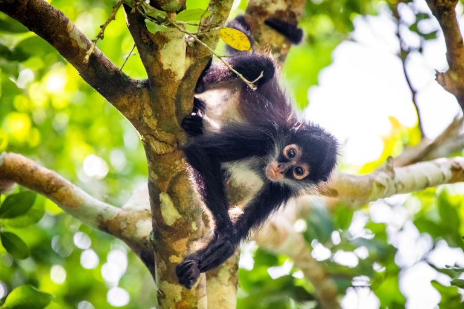
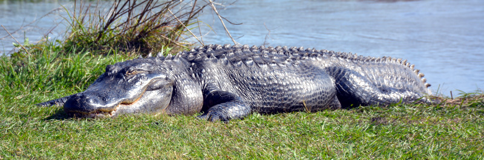

Zoo Animals
Bears

Bears are carnivoran mammals of the family Ursidae.
They are classified as caniforms, or doglike carnivorans. Although only eight species of bears are extant, they are widespread,
appearing in a wide variety of habitats throughout most of the Northern Hemisphere and partially in the Southern Hemisphere. -Wikipedia
More on bears
Giraffes

The giraffe is a large African hoofed mammal belonging to the genus Giraffa.
It is the tallest living terrestrial animal and the largest ruminant on Earth.
Traditionally, giraffes have been thought of as one species, Giraffa camelopardalis, with nine subspecies. -Wikipedia
More on giraffes
Lions

The lion (Panthera leo) is a large cat of the genus Panthera, native to Africa and India.
It has a muscular, broad-chested body; a short, rounded head; round ears; and a hairy tuft at the end of its tail.
It is sexually dimorphic; adult male lions are larger than females and have a prominent mane. -Wikipedia
More on lions
Monkeys

- Cookie
- Earl
- Banana Pudding
Monkey is a common name that may refer to most mammals of the infraorder Simiiformes, also known as the simians.
Traditionally, all animals in the group now known as simians are counted as monkeys except the apes.
Thus monkeys, in that sense, constitute an incomplete paraphyletic grouping;
however, in the broader sense based on cladistics, apes (Hominoidea) are also included,
making the terms monkeys and simians synonyms in regard to their scope. -Wikipedia
More on monkeys
Alligators

An alligator, or colloquially gator, is a large reptile in the genus Alligator of the family Alligatoridae of the order Crocodilia.
The two extant species are the American alligator (A. mississippiensis)
and the Chinese alligator (A. sinensis). Additionally, several extinct species of alligator are known from fossil remains.
Alligators first appeared during the late Eocene epoch about 37 million years ago. - Wikipedia
More on alligators